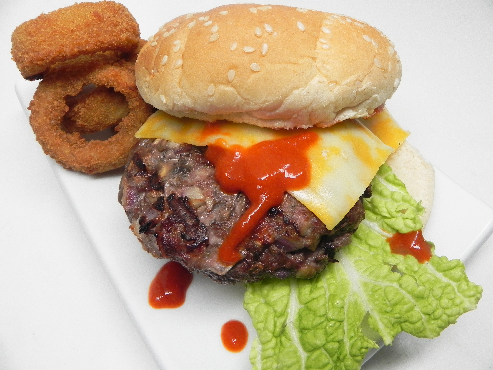

Mushroom Beef Burger

Mushroom beef burger is a simple yet flavorful mushroom beef burgers that
can be made on an indoor grill pan.
The ingredients for this dish can be found below.
- 2 pounds ground beef
- 1 (8 ounce) package mushrooms, chopped, or more to taste
- 1 onion, chopped
- 3 cloves garlic, minced
- 1 teaspoon Italian seasoning
- 1 teaspoon salt
- ½ teaspoon ground black pepper
- cooking spray
The steps to make one of mushroom beef burger can be seen below.
- Remove ground beef from the refrigerator; let stand at room
temperature for 20 minutes.
- Mix mushrooms, onion, garlic, Italian seasoning, salt, and pepper together in a large bowl. Mix in beef.
Form beef mixture into 1/2-inch-thick patties.
- Grease an indoor grill pan with cooking spray. Cook patties in batches until browned and no longer pink in
the center, about 10 minutes per side.